The book of every guh, character and critter you met, with tabs for Knus, Minigames, Clothes and My guhs.
Het boek van alle guhs, personages en diertjes die je tegenkwam, met tabs voor Knus, Minigames, Kleding en Mijn guhs.
The GuhdexDe Guhdex
Craft a Guhdex (a book, kaas knabbels and pink dye) and right-click it. Every kind of guh you've been close to (within 3 blocks) fills in its page, with a picture, how rare it is and something about it; guhs you haven't seen are a dark "???". Tamed a guh of that kind? It gets a gold star. Collect them all for rewards:
Maak een Guhdex (een boek, kaasknabbels en roze kleurstof) en rechtsklik erop. Elke soort guh waar je dichtbij hebt gestaan (binnen 3 blokken) vult zijn pagina in, met een plaatje, hoe zeldzaam hij is en iets over hem; guhs die je nog niet zag zijn een donker "???". Een guh van die soort getemd? Dan krijgt hij een gouden ster. Verzamel ze allemaal voor beloningen:
- 5 seen: heart glasses5 gezien: hartjesbril
- 8 seen + 3 tamed: a monocle8 gezien + 3 getemd: een monocle
- All seen: the guh crystal spyglassAlles gezien: de guh-kristalverrekijker
- All seen and all tamed: the royal crownAlles gezien en alles getemd: de koninklijke kroon
New pages: the variants Asguh and Kaasmoerasguh (tame one for a star), the characters Grillguh, Boswachterguh and Knabbelplukker, and the creatures Kikkerguh, Kaasmot and Moerasheks-Mika (stand close to them). How many Rookguhs you saved is on the Rookguh's own page.
Nieuwe pagina's: de varianten Asguh en Kaasmoerasguh (tem er een voor een ster), de personages Grillguh, Boswachterguh en Knabbelplukker, en de wezens Kikkerguh, Kaasmot en Moerasheks-Mika (ga er dichtbij staan). Hoeveel Rookguhs je hebt gered staat op de eigen pagina van de Rookguh.
the Highscores tab with your best score and the server record of every minigame (see ), and a free Guhdex the first time you step into the Guhmension through a portal without one.
het tabblad Highscores met je beste score en het serverrecord van elke minigame (zie ), en een gratis Guhdex als je zonder er een via een portaal de Guhmensie binnenstapt.
the Guhdex has three tabs, Guhs, Knus and Highscores. Knus holds the milestones and collections of the Knuffeldal and everything around it (see ). New pages: the Pluisguh (a variant: tame one for a star), the characters of the Knuffeldal, the Kruimel-Mika, the guhschaapje, knabbelkippetje and guhkoe, and IJscoguh Tingeling.
de Guhdex heeft drie tabbladen, Guhs, Knus en Highscores. Knus bevat de mijlpalen en verzamelingen van het Knuffeldal en alles eromheen (zie ). Nieuwe pagina's: de Pluisguh (een variant: tem er een voor een ster), de personages van het Knuffeldal, de Kruimel-Mika, het guhschaapje, knabbelkippetje en de guhkoe, en IJscoguh Tingeling.
the Knus tab has the section Piep! with twelve milestones and the Piepboek (six pages: the pieppiepmuisje, Poepschilly, Schilly, the Roze Guh Koek, the boze kaasknabbel and the Boze Oppernabbel; see ).
het tabblad Knus heeft het onderdeel Piep! met twaalf mijlpalen en het Piepboek (zes pagina's: het pieppiepmuisje, Poepschilly, Schilly, de Roze Guh Koek, de boze kaasknabbel en de Boze Oppernabbel; zie ).
icon tabs on top: Guhs, Knus, Minigames (every game building, where it is, your records and the server records per level, track, event or song; the old Highscores tab is in here) and Kleding (all 141 unlockable pieces, grouped per source: grey = locked, green border = yours). New pages: the Pinguh and the eleven new guh characters (see ).
icoontjestabbladen bovenaan: Guhs, Knus, Minigames (elk spelgebouw, waar het is, je records en de serverrecords per niveau, baan, onderdeel of liedje; het oude tabblad Highscores zit hierin) en Kleding (alle 141 ontgrendelbare stukken, per bron: grijs = op slot, groen randje = van jou). Nieuwe pagina's: de Pinguh en de elf nieuwe guhpersonages (zie ).
a fifth tab, Mijn guhs: a dagboekje for every tamed guh with its hearts, favorietjes, vriendjes, huisje and klusjes, where it is right now, statistics, first times and wist-je-datjes (see ). A page now fills in within 3 blocks, for guh characters too.
een vijfde tabblad, Mijn guhs: een dagboekje voor elke tamme guh met zijn hartjes, favorietjes, vriendjes, huisje en klusjes, waar hij nu is, statistieken, eerste keren en wist-je-datjes (zie ). Een pagina vult zich nu al binnen 3 blokken, ook bij guhpersonages.
the Rookguh has its own page with your saved-Rookguh count; it is a bonus page that doesn't count for the rewards. The guh menu's Dagboekje opens straight on that guh's page in Mijn guhs.
de Rookguh heeft een eigen pagina met hoeveel Rookguhs je hebt gered; het is een bonuspagina die niet meetelt voor de beloningen. Dagboekje in het guhmenu opent meteen de pagina van die guh in Mijn guhs.
29 pages (the Baltoguh, Guhtwo and 626-guh, Mieuwguh, the twelve new characters and the thirteen critters, Sjokkel included), so the Guhdex has 95 pages, 94 of which count. In Mijn guhs a guh that died stays with ☁ In de wolkjes... njeg until the Knuffelhart brings it back, and the Kleding tab groups the clothes under Guhverhalen (see ).
29 pagina's (de Baltoguh, Guhtwo en 626-guh, Mieuwguh, de twaalf nieuwe personages en de dertien diertjes, Sjokkel ook), dus de Guhdex heeft nu 95 pagina's, waarvan er 94 meetellen. In Mijn guhs blijft een guh die is doodgegaan staan met ☁ In de wolkjes... njeg tot het Knuffelhart hem terughaalt, en het tabblad Kleding zet de kleertjes bij elkaar onder Guhverhalen (zie ).
Highscores in the GuhdexHighscores in de Guhdex
Open the Guhdex and click the Highscores button at the top: a page with all your minigame records, one line per game with its icon. Big: your own best (kept for every player, also if you never made the world's top 3; records count too). Smaller underneath: the server record and who holds it ("dat ben JIJ! VAHOEG!" if it's you). Never played? "Nog nooit gespeeld, njeg!". The page updates as soon as a score changes. 12 lines: Vads-wedstrijd, Guhrace (total time), Guhrace: fastest lap, Mika meppen, Guhdisco, Guhgolf (9 holes), Vadsig eetfestijn, Guhvis-wedstrijd (points), heaviest fish, and Verstopguh makkelijk, medium and moeilijk. For times and golf strokes less is better, for the rest more.
Open de Guhdex en klik bovenaan op Highscores: een pagina met al je minigame-records, één regel per spel met zijn icoontje. Groot: je eigen beste (voor elke speler bewaard, ook als je nooit in de top 3 van de wereld kwam; records van vóór tellen ook). Kleiner eronder: het serverrecord en wie het heeft ("dat ben JIJ! VAHOEG!" als jij het bent). Nog nooit gespeeld? "Nog nooit gespeeld, njeg!". De pagina werkt zich bij zodra er een score verandert. 12 regels: Vads-wedstrijd, Guhrace (totale tijd), Guhrace: snelste ronde, Mika meppen, Guhdisco, Guhgolf (9 holes), Vadsig eetfestijn, Guhvis-wedstrijd (punten), zwaarste vis, en Verstopguh makkelijk, medium en moeilijk. Bij tijden en golfslagen is minder beter, bij de rest meer.
Minigames and the GuhdexMinigames en de Guhdex
More tickets and coins: every reward of every minigame now gives at least 1 more than before (the zeros for doing nothing stay zero: no AFK farming, njeg). And if your inventory is full, the reward doesn't vanish any more: what doesn't fit drops on the ground in front of you.
Meer tickets en munten: elke beloning van elke minigame geeft nu minstens 1 meer dan eerst (de nullen voor niksdoen blijven nul: geen AFK-boeren, njeg). En zitten je zakken vol, dan verdwijnt de beloning niet meer: wat niet past valt voor je op de grond.
| MinigameMinigame | Pays inBetaalt in | Per gamePer potje | First time everDe allereerste keer |
|---|---|---|---|
| Vads ContestVads-wedstrijd | Per round 2 / 3 / 4 / 5 (below 16, from 16, 22 and 27 points; a naked walk: 0). End of the show +2, or +5 from 65 points.Per ronde 2 / 3 / 4 / 5 (onder 16, vanaf 16, 22 en 27 punten; bloot over de catwalk: 0). Einde van de show +2, of +5 vanaf 65 punten. | +4, 3 guh balloons, 4 fried kaasknabbels+4, 3 guhballonnen, 4 gefrituurde kaasknabbels | |
| GuhraceGuhrace | Gold 6 (under 1:12), silver 4 (under 1:25), bronze 3 (under 1:45), finished 2; beat your own record: +2.Goud 6 (onder 1:12), zilver 4 (onder 1:25), brons 3 (onder 1:45), gefinisht 2; je eigen record verbeterd: +2. | +4, 16 kaasknabbels+4, 16 kaasknabbels | |
| Mika WhackingMika meppen | mepmunten | 2 + 1 per 300 points, at most 11 (not a single Mika whacked: 0).2 + 1 per 300 punten, hoogstens 11 (geen enkele Mika gemept: 0). | +4, 8 kaasknabbels+4, 8 kaasknabbels |
| Guhdisco | 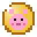 discomunten | From 3 colours: 1 per 2 colours + 1 (3 colours = 2), +2 from 10 colours and another +3 from 15 (10 colours = 7, 15 = 13).Vanaf 3 kleuren: 1 per 2 kleuren + 1 (3 kleuren = 2), +2 vanaf 10 kleuren en nog +3 vanaf 15 (10 kleuren = 7, 15 = 13). | +4, a kaasknabbel milkshake+4, een kaasknabbelmilkshake |
| Guhgolf | Per hole: hole in one 6, eagle 5, birdie 4, par 3, bogey 2, worse 1 (8 strokes and not in: 0). After the round +3, +4 more at par or better, +3 more for a new record.Per hole: hole-in-one 6, eagle 5, birdie 4, par 3, bogey 2, slechter 1 (8 slagen en nog niet in de hole: 0). Na het rondje +3, nog +4 bij par of beter, nog +3 voor een nieuw record. | +6, 16 kaasknabbels, 4 fried kaasknabbels+6, 16 kaasknabbels, 4 gefrituurde kaasknabbels | |
| Vadsig eetfestijnVadsig eetfestijn | 2 as soon as you scored, +1 at 25, 50, 80, 120, 170 and 230 points (at most 8).2 zodra je iets scoorde, +1 bij 25, 50, 80, 120, 170 en 230 punten (hoogstens 8). | +4, a guh cake+4, een guhtaart | |
| Guhfish ContestGuhvis-wedstrijd | 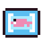 visbonnen | 2 + 1 per 60 points, at most 13 (stopped early: 1 less); winner +3, new record +3.2 + 1 per 60 punten, hoogstens 13 (eerder gestopt: 1 minder); winnaar +3, nieuw record +3. | +4, 4 baked guh fish, 16 kaasknabbels+4, 4 gebakken guhvissen, 16 kaasknabbels |
| Verstopguh | Makkelijk 2, medium 3, moeilijk 5; +2 if you find them all within 2 / 4 / 6 minutes.Makkelijk 2, medium 3, moeilijk 5; +2 als je ze allemaal vindt binnen 2 / 4 / 6 minuten. | – |
A Guhdex when you arrive: whoever steps into the Guhmension through a portal (from the Overworld, the Barbecuether or the Guheinde) and has no Guhdex yet gets one for free: "Welkom in de Guhmensie! Hier, een Guhdex: vul hem met alle guhs die je tegenkomt. Njeg!" Full pockets? Then it lands on the ground in front of you.
Een Guhdex bij aankomst: wie via een portaal de Guhmensie binnenstapt (uit de Overworld, de Barbecuether of het Guheinde) en nog geen Guhdex heeft, krijgt er gratis een: "Welkom in de Guhmensie! Hier, een Guhdex: vul hem met alle guhs die je tegenkomt. Njeg!" Zakken vol? Dan valt hij voor je op de grond.
Buildings no longer grow into each other: every building now claims its own space when the world is made, so a minigame hall, a village or a Guhbubbel is always generated whole (operators can check it with /guhs bouwcheck, see the commands below).
Gebouwen groeien niet meer in elkaar: elk gebouw claimt nu zijn eigen ruimte als de wereld wordt gemaakt, dus een minigamehal, een dorp of een Guhbubbel wordt altijd heel gegenereerd (operators kunnen het nakijken met /guhs bouwcheck, zie de commando's hieronder).
Guhs · Knus · Highscores
The Guhdex now has three tabs. Knus has a part for every feature (Het Knuffeldal, Seizoenen, Knabbelbakkerij, Knuffelcreche, Knabbelthee-huisje, Knip & Vads, Guhboerderij, Guhtuintjes, Guh-Sterrenwacht, Ballonfestival, Kampeerplekjes, Knuffelbad and Guhleven) with milestones and progress bars (claim the reward when one is full) and collection pages: knuffelvriendjes, seizoensplakboek, receptenboek, slaapliedjes, theesoorten, kapselcollectie, tuinboek, sterrenatlas, ballonstempelkaart, verhalenbundel (read Opa's stories again), badeendjes, knuffelkast, liedjesboek and kaasijsjes. Highscores got six new games: Knabbelbakkerij, Babyguhtjes terugbrengen, Kappersshow and the three slides. New Guhdex pages: the Pluisguh, the eleven characters, the Kruimel-Mika, the three farm animals and IJscoguh Tingeling.
De Guhdex heeft nu drie tabbladen. Knus heeft een onderdeel voor elk ding (Het Knuffeldal, Seizoenen, Knabbelbakkerij, Knuffelcreche, Knabbelthee-huisje, Knip & Vads, Guhboerderij, Guhtuintjes, Guh-Sterrenwacht, Ballonfestival, Kampeerplekjes, Knuffelbad en Guhleven) met mijlpalen en voortgangsbalkjes (haal de beloning op als er een vol is) en verzamelpagina's: knuffelvriendjes, seizoensplakboek, receptenboek, slaapliedjes, theesoorten, kapselcollectie, tuinboek, sterrenatlas, ballonstempelkaart, verhalenbundel (lees de verhalen van Opa nog eens), badeendjes, knuffelkast, liedjesboek en kaasijsjes. Highscores kreeg zes nieuwe spellen: Knabbelbakkerij, Babyguhtjes terugbrengen, Kappersshow en de drie glijbanen. Nieuwe Guhdex-pagina's: de Pluisguh, de elf personages, de Kruimel-Mika, de drie boerderijdieren en IJscoguh Tingeling.
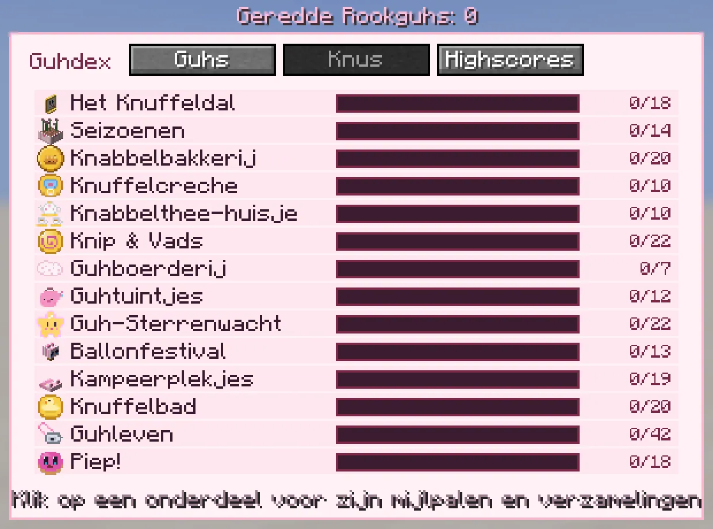
The section Piep!Het onderdeel Piep!
The Knus tab of the Guhdex has a new section at the bottom: Piep!, with twelve milestones (muisjes petted and tamed, a whole muizenfamilie, verstoppertje, poetsbeurten, bestie moments with Schilly, beef made up, zielige knabbels beaten, the nest won, koeken eaten) and the collection Piepboek: six pages with a little story each, for the pieppiepmuisje, Poepschilly, Schilly, the Roze Guh Koek, the boze kaasknabbel and the Boze Oppernabbel.
Het tabblad Knus van de Guhdex heeft onderaan een nieuw onderdeel: Piep!, met twaalf mijlpalen (muisjes geaaid en getemd, een hele muizenfamilie, verstoppertje, poetsbeurten, bestie-momenten met Schilly, beef bijgelegd, zielige knabbels verslagen, het nest gewonnen, koeken gesmikkeld) en de verzameling Piepboek: zes pagina's met elk een verhaaltje, voor het pieppiepmuisje, Poepschilly, Schilly, de Roze Guh Koek, de boze kaasknabbel en de Boze Oppernabbel.
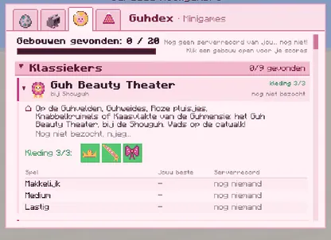
The Guhdex: four icon tabsDe Guhdex: vier icoontjestabbladen
The Guhdex now has icon tabs on top (the name shows when you hover): Guhs, Knus, Minigames and Kleding. The old Highscores tab is inside Minigames now. Everything scrolls with the mouse wheel, and groups fold open and shut.
De Guhdex heeft nu icoontjestabbladen bovenaan (de naam zie je als je erop wijst): Guhs, Knus, Minigames en Kleding. Het oude tabblad Highscores zit nu in Minigames. Alles scrollt met het muiswiel, en groepjes klappen open en dicht.
- Minigames: how many game buildings you found, then the groups Klassiekers, Knuffeldal and De Grote Guhspelen. Per building: where to find it, whether you've been there, its clothes as icons, and a score table per level, track, event or song with your best, the server record and who holds it (a gold star when it's you).Minigames: hoeveel spelgebouwen je vond, en dan de groepen Klassiekers, Knuffeldal en De Grote Guhspelen. Per gebouw: waar je het vindt, of je er al was, zijn kleertjes als icoontjes, en een scoretabel per niveau, baan, onderdeel of liedje met je beste, het serverrecord en wie het heeft (een gouden ster als jij het bent).
- Kleding: Ontgrendeld x / 141, grouped per source. Grey icons are still locked (hover to see the name, the source and the price), colourful ones with a green border are yours. Hairstyles are listed last, bij de kapper.Kleding: Ontgrendeld x / 141, per bron gegroepeerd. Grijze icoontjes zitten nog op slot (wijs erop voor de naam, de bron en de prijs), gekleurde met een groen randje zijn van jou. Kapsels staan onderaan, bij de kapper.
- Knus and Guhs work as before (with the Piep section), and there are twelve new pages: the Pinguh and the eleven new guh characters.Knus en Guhs werken zoals altijd (met het onderdeel Piep), en er zijn twaalf nieuwe pagina's: de Pinguh en de elf nieuwe guhpersonages.
The Guhdex and the superkompasDe Guhdex en het superkompas
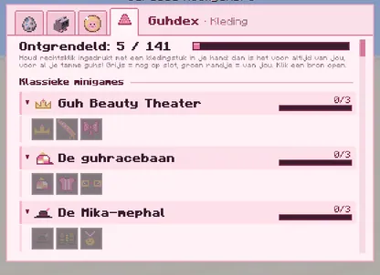
Kleding: 5 of 141Kleding: 5 van 141
Just started: almost everything is still grey.Net begonnen: bijna alles is nog grijs.
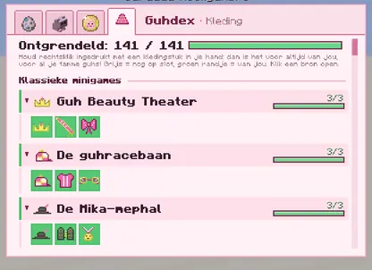
Kleding: all 141Kleding: alle 141
Everything unlocked: green borders everywhere. VAHOEG!Alles ontgrendeld: overal groene randjes. VAHOEG!
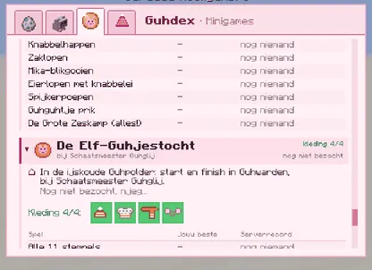
Minigames: the Elf-GuhjestochtMinigames: de Elf-Guhjestocht
Scores per event and the tour, with the outfit.Scores per onderdeel en de tocht, met het pakje.
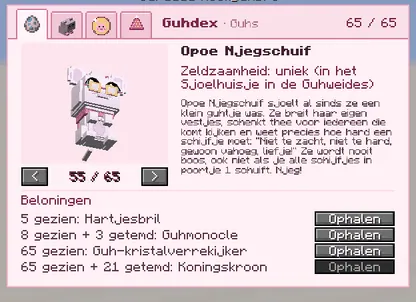
Opoe Njegschuif's pageDe pagina van Opoe Njegschuif
Unique: in the Sjoelhuisje.Uniek: in het Sjoelhuisje.
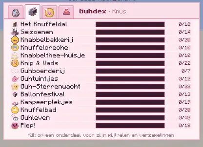
The Knus tabHet tabblad Knus
Still all your Knuffeldal milestones.Nog steeds al je Knuffeldal-mijlpalen.
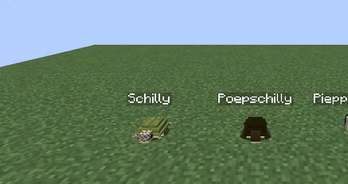
Names above their headsNaampjes boven hun kopje
- Schilly, Poepschilly and the pieppiepmuisje show their name above their head, like guhs (not while they hide or crawl inside a guh).Schilly, Poepschilly en het pieppiepmuisje laten hun naam boven hun kopje zien, net als guhs (niet als ze zich verstoppen of in een guh kruipen).
- The Guhdex fills a page as soon as you are within 3 blocks of a guh or a guh character (it used to be 1).De Guhdex vult een pagina zodra je binnen 3 blokken van een guh of een guhpersonage bent (vroeger 1).
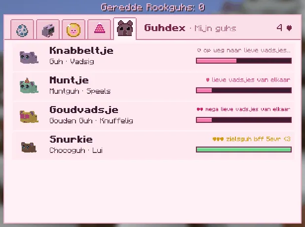
A dagboekje for every guhEen dagboekje voor elke guh
The Guhdex has a fifth tab, Mijn guhs: all your tamed guhs with a mini render, their level and a hearts bar. Click one (or press Dagboekje in its guh menu) for its own page:
De Guhdex heeft een vijfde tabblad, Mijn guhs: al je tamme guhs met een mini-plaatje, hun niveau en een hartjesbalk. Klik er een aan (of druk op Dagboekje in zijn guhmenu) voor zijn eigen pagina:
- a 3D preview you can drag to rotate, its name, variant and personality, the level and hearts progress;een 3D-voorbeeld dat je kunt ronddraaien, zijn naam, variant en karakter, het niveau en de hartjesvoortgang;
- its favorietjes (??? until you find them), its vriendjes, its huisje & klusjes;zijn favorietjes (??? tot je ze vindt), zijn vriendjes, zijn huisje & klusjes;
- Waar is hij?: the dimension and coordinates and what it's doing: walking around / sitting and waiting; in (or asleep in) a named Guhhuisje; in your pockets, a chest, a backpack, a Bank Guh or as a parcel on the ground; running in a Guh Wheel, riding or being ridden, on a shoulder; in the Guhkamer, or inside another guh for a poetsbeurt;Waar is hij?: de dimensie en coördinaten en wat hij doet: loopt rond / zit braaf te wachten; in (of slapend in) een Guhhuisje met naam; in je zakken, een kist, een rugzak, een Bank Guh of als pakketje op de grond; rondjes in een Guh Wheel, rijden of bereden worden, op een schouder; in de Guhkamer, of in een andere guh voor een poetsbeurt;
- statistieken: blocks travelled together, knuffels, snacks eaten, minigames together, knabbels dug up, days together, chores done, times played;statistieken: blokken samen gereisd, knuffels, hapjes gegeten, minigames samen, knabbels opgegraven, dagen samen, klusjes gedaan, keer gespeeld;
- eerste keren with funny njeg/vads texts (first time tamed, first ride, first minigame, first Guheinde, first ijsje...), andeerste keren met grappige njeg/vads-tekstjes (eerste keer getemd, eerste ritje, eerste minigame, eerste Guheinde, eerste ijsje...), en
- wist-je-datjes the guh writes itself after big moments: Vandaag ben ik zo VAHOEG geworden, njeg.wist-je-datjes die de guh zelf schrijft na belangrijke momenten: Vandaag ben ik zo VAHOEG geworden, njeg.
De Guhdex: Mijn guhs
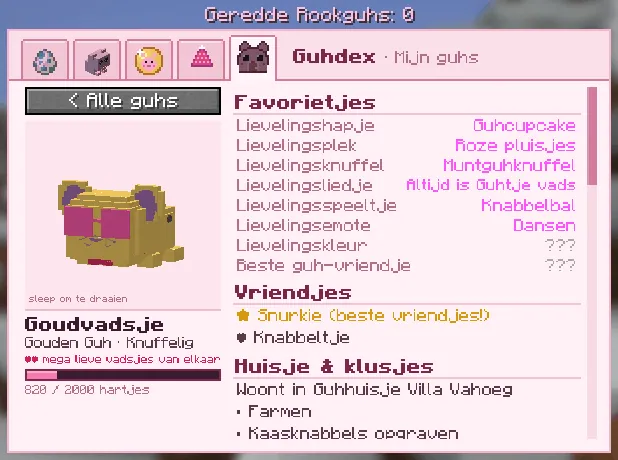
A pageEen pagina
Favorietjes (found ones in pink), vriendjes and the huisje.Favorietjes (gevonden in roze), vriendjes en het huisje.
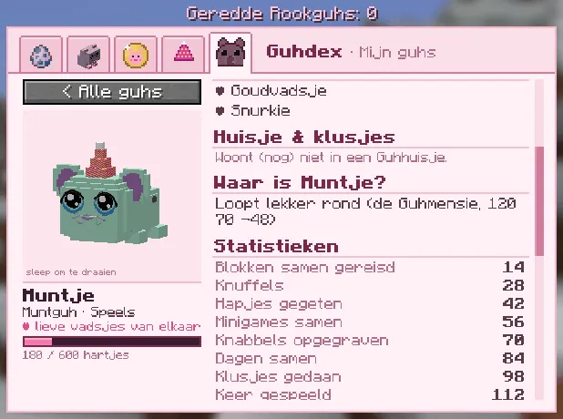
Waar is hij? and statistiekenWaar is hij? en statistieken
Scroll down for where it is and the numbers.Scroll omlaag voor waar hij is en de getallen.
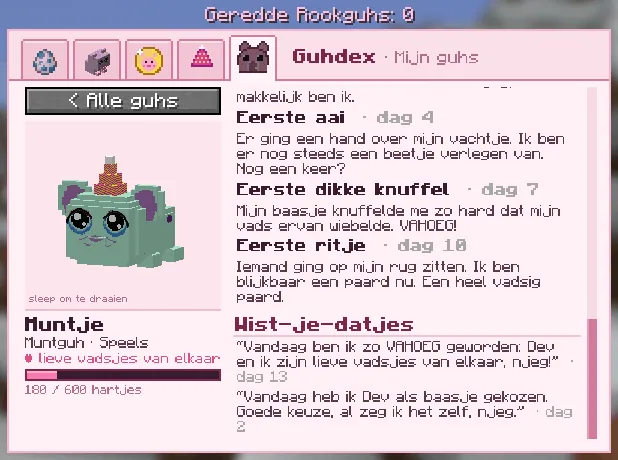
Eerste keren and wist-je-datjesEerste keren en wist-je-datjes
The dagboekje bits, newest first.De dagboekjesstukjes, nieuwste eerst.
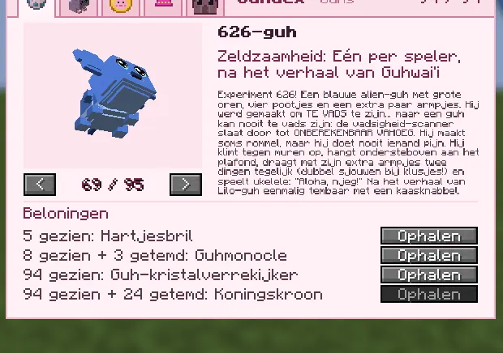
626-guh
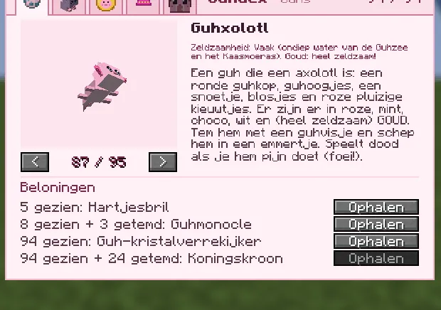
Guhxolotl
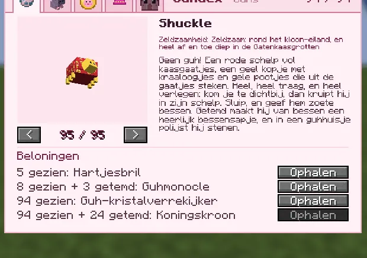
Sjokkel
Page 95.Pagina 95.
29 new pages: the three story guhs (tame yours for a gold star), Mieuwguh, the twelve new characters (Timmerguh, Boris, Steele-Mika, Muk, Luk, Rosy, the white wolf-guh, Professor Knabbelkloon, the wolkenhoeder, Lilo-guh, Nani-guh, Tikiguh) and the thirteen critters. The Guhdex now has 95 pages; 94 of them count for the rewards (the Rookguh page is a bonus page, see 2.10.1). The critter pages fill in from a bit further away (4 to 8 blocks), because they're shy.
29 nieuwe pagina's: de drie verhaalguhs (tem de jouwe voor een gouden ster), Mieuwguh, de twaalf nieuwe personages (Timmerguh, Boris, Steele-Mika, Muk, Luk, Rosy, de witte wolf-guh, Professor Knabbelkloon, de wolkenhoeder, Lilo-guh, Nani-guh, Tikiguh) en de dertien diertjes. De Guhdex heeft nu 95 pagina's; 94 daarvan tellen mee voor de beloningen (de Rookguh-pagina is een bonuspagina, zie 2.10.1). De diertjespagina's vullen zich al van iets verder weg (4 tot 8 blokken), want ze zijn verlegen.